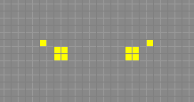
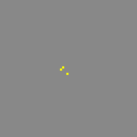
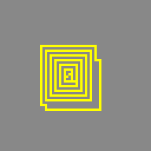
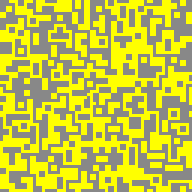
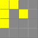

A finite set of the states that each cell may be in
A partition of the cells into a uniform tessellation in which each tile of the partition has the same size and shape
A rule for shifting the partition after each time step
A transition rule, a function that takes as input an assignment of states for the cells in a single tile and produces as output another assignment of states for the same cells.
For block cellular automata rule is a transfer function that calculates next state of the block from the current state. For cellular automaton to be reversible, such function should, indeed, be invertible.
Since in the Margolus neighborhood block consists of 4 cells and there are 2 possible cell states, 24 = 16 possible blocks exist:
0
1
2
...
15
...
Some of the possible block states.
A transition rule must assign a descendant state for each of the 16 original states. If the rule is invertible, the assignment must be a one-to-one relation; in other words - it must be a permutation of 16 elements.
In the simulator, rules are represented as arrays of 16 integers from 0 to 15.
For example, (0,1,2,3,4,5,6,7,8,9,10,11,12,13,14,15,16) is the identity rule that does not changes any cells. The cellular automaton with this rule is rather boring though: under this rule, any configuration of cells remains unchanged forever. It is easy to see that such rule is, indeed, reversible.
More interesting rule is the “Billiard Ball Machine”, described by the permutation: (0,8,4,3,2,5,9,7,1,6,10,11,12,13,14,15). It is hard see from the numbers themselves, but this automaton exhibits behavior, resembling bouncing billiard balls and walls:
Behavior of the BBM cellular automaton resembles bouncing billiard balls.
This and some other rules are listed here (all rules from this list are present as predefined rules in the simulator program).
Rule invariants
Contrary to the well-known Conway's Life cellular automaton, block automata with Margolus neighborhood has no (1,0) and (0,1) translation symmetry. Instead, they only have the (2,0) and (0,2) symmetries. This means that shift by 1 cell turns a figure into completely different one.
Top: P4 orthogonal spaceship. Bottom: P8 oscillator. (Under the “Critters” rule)
For example, under the “Critters” the top figure is a spaceship, and the bottom is an oscillator.
Only translation by a whole block (2 cells) in any direction leaves behavior of the configuration unchanged - it is guaranteed by construction.
Rules may have other invariants. The application performs analysis of a rule to determine them. The following invariants are detected:
Rotate by 90°
The rule has 4-fold rotational symmetry; transition function commutes with rotation by 90°.
For example, spaceship rotated by 90° will remain spaceship but change travel direction.
Rotate by 180°
The rule has 2-fold rotational symmetry; transition function commutes with rotation by 180°.
4-fold symmetry implies 2-fold too, but converse is not true. If a rule only have 2-fold symmetry, then spaceships in this rule
Horizontal / Vertical / Diagonal flip
The rule has mirror symmetry with axis, oriented horizontally, vertically or diagonally.
The “Critters” rule has mirror symmetry; mirrored configuration will evolve in the same way as original.
The “Rotations” rule (0,2,8,12,1,10,9,11,4,6,5,14,3,7,13,15) has no such symmetry. For example:

Left: P270 orthogonal c/135 spaceship. Right: P664 oscillator. (Under the “Rotations” rule)
Negation
Under the rules with negation symmetry, evolution of the figure will be the same, if every alive cell is replaced with dead and back.
The “Rotations” rule is negation-invariant.
An inverted diagonal P9 spaceship: group of dead cells, traveling across the field of alive cells. “Rotations” rule.
Conservation law
Regarding the total number of alive cells in the field, 3 different kind of behavior can be observed:
Number of alive cells varies.
“Tron” rule, (15,1,2,3,4,5,6,7,8,9,10,11,12,13,14,0) is an example of such behavior.



Evolution of the initial 3-cell configuration under the “Tron” rule on toroidal 64x64 field: initial configuration, after 12 steps, after 1200 steps
Usually, almost any initial configuration tends to grow chaotically in such automata. Numbers of dead and alive cells tending to become nearly equal. Often, resulting pattern is visually indistinguishable from the random noise, though the “Tron” rule is a counter-example.
Number of alive cells is constant.
“Billiard Ball Machine” rule is an example.
“Flashing” rules, where numbers of alive and dead cells are interchanging on each generation.
After 2 generations, number of alive cells returns to the original value, so it can be considered as a special case of the previous type.
The “Critters” rule is an example.
Dual transform
Time-inverted block cellular automaton is also block cellular automaton of the same kind.
Its rule is inverse permutation of the original rule.
However, there is one more difference: in time-inverted cellular automata, order of phases of the lattice is also inverted. This can be obtained by translating whole field by 1 cell along both axes. In the simulator program, this is called phase shift; buffer content can be phase-shifted with button (Phase).
In a general case, the inverse rule is completely different from the direct. But for some rules, a simple geometrical relation between direct and inverse rules is present. For example, in the “Rotations” rule (0,2,8,12,1,10,9,11,4,6,5,14,3,7,13,15) inverse rule is a mirror image of the direct. In other words, to inverse-transform a configuration, one could first mirror it, then transform it directly, and finally mirror it again. It can be written as:
F-1 = H-1∘F∘H
Where F is a cellular automaton transition function, and H is a horizontal flip transform.
Rule vacuum period
Number of generations, after which empty field (vacuum) returns to its original state. For the population-preserving rules, vacuum period is 1; for the “flashing” rules it is 2. Some irregular rules can have bigger vacuum periods. For example, asymmetric rule (1,2,3,4,5,6,7,8,9,10,11,12,13,14,15,0) has vacuum period of 7.
RLE encoding
For textual representation of configurations, the simplified RLE format is used.
See details here. Only “b” (dead cell), “o” (alive cell) and “$” (newline) characters and digits are supported; space characters are ignored. Example:

Conway GOL glider. RLE encoding is 2o$obo$o.
Comments, offset and other features of RLE are not supported.
Features
Figure analyzer
Some rules (such as Rotations, Rotations II, III, IV) support spaceships and oscillators with extremely large periods.
For example, The following spaceship in the “Rotations II” rule (0,2,8,12,1,10,9,13,4,6,5,7,3,14,11,15) has period 10896 generations.
A spaceship with period 10896. Rule is “Rotations II”
Manual classification of such configuraions is therefore nearly impossible. To simplify the work, simulator has the figure analyser feature, enabled by the (AS) button. To use it, select some area on the field and then press the button. Application will try to detect the following information:
Type of the figure: oscillator, diagonal, orthogonal or slant spaceship.
Period (for spaceships and oscillators).
Offset: how far spaceship travels per one period.
Canonical form of the figure: the most “compact” of all evolution steps of the figure. Sometimes it is not unique.
Analyzer only tries to evaluate given configuration for a limited number of generations. If this number is exceeded, but cycle is not found, figure type and period will be “unknown”. By default, limit is 2048 steps, this can be changed on the “Settings” panel.
Spaceship Catcher
Enabled by the button: (Catcher).
Spaceship catcher is a tool that automatically :
finds all figures touching the borders of the field,
removes them from the field,
analyses and adds canonical form to the current library.
When enabled, spaceship catcher reseeds the field periodically: the field is cleared and currently selected area is filled randomly. By default, reseed period is 30'000 generations, it can be changed in the “Settings” panel.
Spaceship catcher can be used to quickly find naturally occurring gliders for the given rule.
GIF Recorder
The application can record GIF animations. To start record, press the R. This will start the recorder. Then let the field evolve for several generations, using play buttons. Each new frame will be added to the GIF image. You will see, how the size of the file in Kb grows. To stop record and get the produced image, press the S button. Image can be saved using right-click.
Predefined Rules
The simulator contains a set of predefined rules, taken from the MCells page.
Here are they:
Name
Rule
Description
BBM
8,4,3,2,5,9,7,1,6,10,11,12,13,14,15
Famous Billiard Ball Machine - from Cellular Automata Machines. A rule by Edward Fredkin.
Bounce Gas
8,4,3,2,5,9,14,1,6,10,13,12,11,7,15
An uniform "gas". A rule by Tim Tyler.
Bounce Gas II
8,4,12,2,10,9,7,1,6,5,11,3,13,14,15
Another uniform "gas". A rule by Tim Tyler.
Critters
15,14,13,3,11,5,6,1,7,9,10,2,12,4,8,0
This rule supports "gliders" - as described in Cellular Automata Machines. A rule by Margolus/Toffoli.
HPP Gas
8,4,12,2,10,9,14,1,6,5,13,3,11,7,15
HPP (Hardy/Pazzis/Pomeau) lattice gas - as described in Cellular Automata Machines. A rule by Hardy, Pazzis, and Pomeau.
Rotations
2,8,12,1,10,9,11,4,6,5,14,3,7,13,15
Limited diffusion. A rule by Tim Tyler.
Rotations II
2,8,12,1,10,9,13,4,6,5,7,3,14,11,15
Limited diffusion. A rule by Tim Tyler.
Rotations III
4,1,10,8,3,9,11,2,6,12,14,5,7,13,15
Slow, random-looking diffusion. A rule by Tim Tyler.
Rotations IV
4,1,12,8,10,6,14,2,9,5,13,3,11,7,15
Slow, random-looking diffusion. A rule by Tim Tyler.
Sand
4,8,12,4,12,12,13,8,12,12,14,12,13,14,15
Sand simulation. Non-revertible. A rule by Mirek Wojtowicz.
String Thing
1,2,12,4,10,9,7,8,6,5,11,3,13,14,15
String shaped patterns. A rule by Tim Tyler.
String Thing II
1,2,12,4,10,6,7,8,9,5,11,3,13,14,15
More string shaped patterns. A rule by Tim Tyler.
Swap On Diag
8,4,12,2,10,6,14,1,9,5,13,3,11,7,15
A gas with no particle interactions - as described in Cellular Automata Machines. A rule by Margolus/Toffoli.
Tron
15,1,2,3,4,5,6,7,8,9,10,11,12,13,14,0
A "trip-a-tron" - from the pages of Cellular Automata Machines. A rule by Margolus/Toffoli.